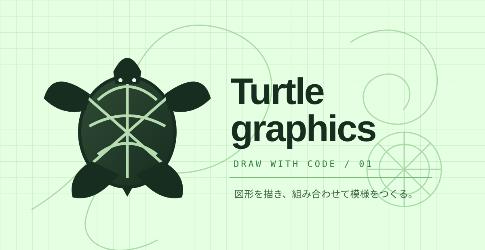
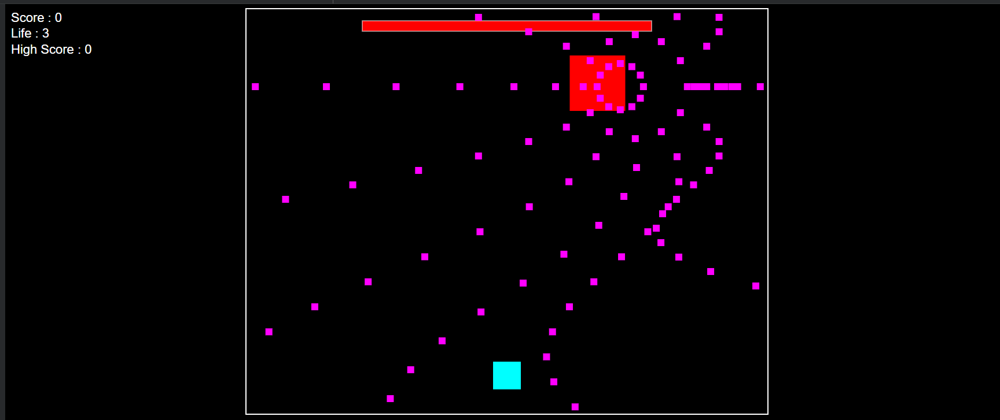

CAFETERIA / UI CONCEPTPROJECT / 01
混雑状況
CHECK_
食堂混雑状況確認サイト
食堂の混雑状況を見える化するWebアプリ。JavaScriptとSupabaseを使い、2026年11月のハッカソン展示に向けて制作中。
JavaScriptSupabaseWeb
DETAILS Starting Windows
INITIALIZING PERSONAL PORTFOLIO
Loading profile and projects...
DIRECTORY / PROJECTS
作ったもの、試したこと、これから改善したいこと。
食堂の混雑状況を見える化するWebアプリ。JavaScriptとSupabaseを使い、2026年11月のハッカソン展示に向けて制作中。
CLASSWORK / GOOGLE COLAB

CLASSWORK / 01タートルグラフィックスで線や図形を描き、組み合わせて模様を作る課題です。描画の命令を通して、コードで絵を表現しました。
課題04_40YC.ipynb

CLASSWORK / 02東方Projectの弾幕シューティングをイメージした作品です。キャラクターや弾の動きをコードで組み立て、ゲームの形にしました。
PG1-第04回講義.ipynb
Colabの閲覧にはGoogleへのログインや、ノートブックの共有設定が必要な場合があります。
制作について
授業等で制作したモノも含め、目的や取り組んだことを紹介しています。